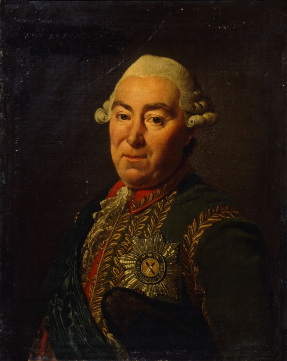
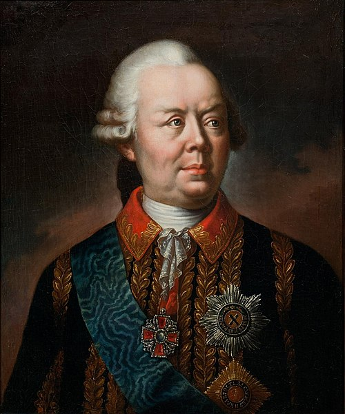
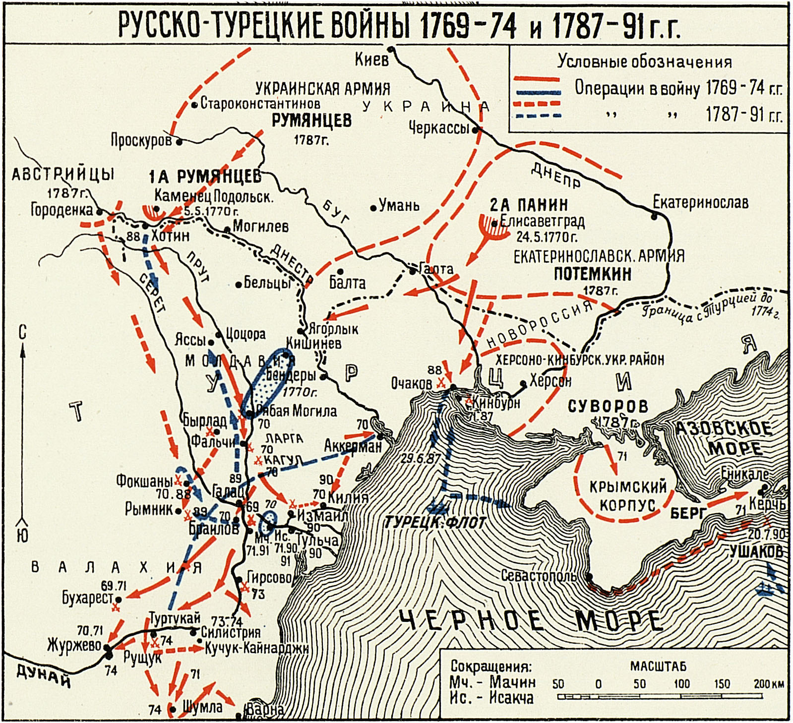
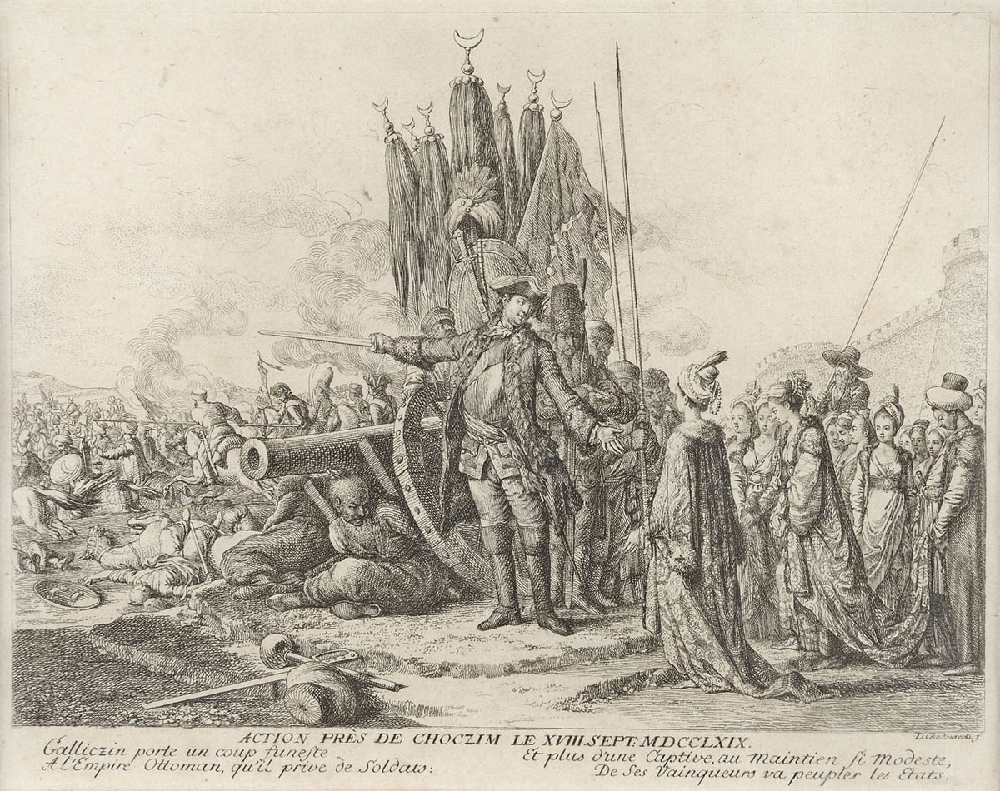

В 1769 году началась Русско-турецкая война, и русская армия была разделена на три части. Главная армия под командованием князя Голицына, насчитывающая до 71 тыс. человек, собиралась у Киева, в то время как армия Румянцева (до 43 тыс.) должна была защищать южные границы, а авангардная армия Олица (до 15 тыс.) располагалась у Луцка.
4-7 января 1769 года турецко-татарская армия (70 тыс.) под командованием крымского хана Кырым Герая вторглась на земли Новой Сербии. Турки разорили местные поселения и захватили большое количество людей в рабство, но их набег был отбит 6-тысячным гарнизоном крепости Святой Елизаветы. После этого начались масштабные боевые действия.


.jpg)
15 апреля русская армия форсировала Днестр и 19 апреля подошла к крепости Хотин, но из-за отсутствия осадной артиллерии не смогла её взять. Голицын решил отступить и дождаться подхода турецких сил. В это время Румянцев с войсками перешёл Днепр и направился к Елисаветграду, а также организовал диверсии против татар на Крымском полуострове.
21 мая турецкие войска переправились через Дунай и начали наступление на Новороссийскую губернию. Однако, из-за плохого снабжения и трудностей с сооружением мостов, их продвижение было медленным. 3 июня великий визирь перевёл свои силы через реку Прут и расположился у Рябой могилы, направив свои войска на Бендеры и Елисаветград.

Турки пытались переправиться через Днестр у Хотина, но были отбиты русским авангардом. 24 июня Голицын снова переправился через Днестр и осадил Хотин, однако не решился на штурм из-за нехватки продовольствия и осадной артиллерии. В итоге, в конце июля турки и татары начали отходить, а русская армия продолжала блокировать Хотин.
29 августа, после жестоких сражений, турки были отброшены за Днестр. 9 сентября русские войска без боев заняли Хотин, получив 182 пушки и боеприпасы в трофеи. В том же месяце русские войска заняли Яссы, а турки отступили к Дунай. Несмотря на успехи, Голицына заменили на посту командующего армией, и на его место был назначен Румянцев.

В конце 1769 года русская армия укрепилась на зимние квартиры между Днестром, Бугом и Збручом.